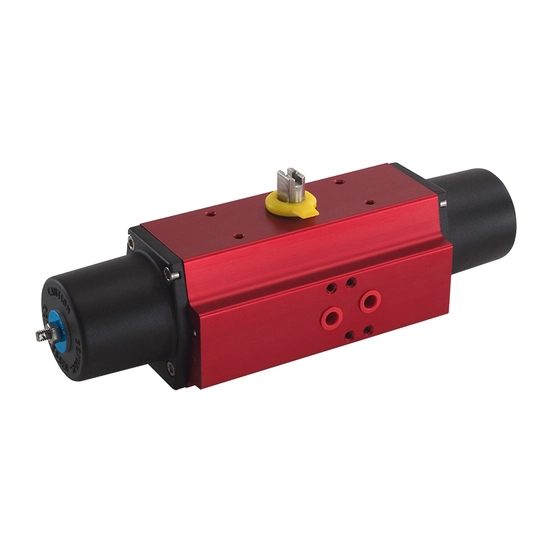

GP/GH và RC200 đều là actuator scotch-yoke của Rotork cho van quarter-turn (van bi, van bướm, van plug) nhưng thuộc hai nhóm tải trọng khác nhau. GP/GH là dòng heavy-duty dùng khí nén hoặc thủy lực với torque tới 600.000 Nm. RC200 là dòng light-duty chỉ dùng khí nén, thiết kế compact và nhẹ. Bài viết so sánh theo torque, môi trường vận hành, nguồn năng lượng và bảo trì để chọn đúng nhóm cho từng ứng dụng.

Trả lời nhanh
- GP/GH: heavy-duty, khí nén tới 12 bar hoặc thủy lực tới 210 bar, torque tới 600.000 Nm.
- RC200: light-duty, chỉ khí nén, compact và nhẹ nhất trong nhóm actuator có torque tương đương, tiết kiệm khí nén hơn actuator rack-and-pinion.
- GP/GH có 3 dải nhiệt độ hoạt động: tiêu chuẩn, thấp và cực thấp (-60°C).
- Cả hai đều có tùy chọn manual override và cấu hình spring-return.
- RC200 thuộc nhóm "Light Duty Fluid Actuators" theo phân loại chính thức của Rotork; GP/GH thuộc nhóm heavy-duty.
Bảng so sánh GP/GH và RC200
| Tiêu chí | GP/GH | RC200 |
|---|---|---|
| Phân loại | Heavy-duty | Light-duty (compact) |
| Nguồn năng lượng | Khí nén (tới 12 bar) hoặc thủy lực (tới 210 bar) | Khí nén (double-acting hoặc spring-return) |
| Torque tối đa | Tới 600.000 Nm | Tới 4.400 Nm (3.245 lbf.ft) |
| Nhiệt độ hoạt động | -30 đến +100°C tiêu chuẩn; tùy chọn tới -60°C | Chưa công bố cụ thể trên trang tổng quan |
| Bảo vệ môi trường | IP66M, IP67M | Có test report IP66/IP67 riêng (PUB065-037/038) — cần đối chiếu khi báo giá |
| Manual override | Có, nhiều tùy chọn (jackscrew, hydraulic override) | Có, tùy chọn tích hợp (integral) |
| Ưu điểm thiết kế | Torque lớn, chịu môi trường khắc nghiệt, có bản thủy lực | Trọng lượng và kích thước nhỏ nhất ở cùng mức torque, tiết kiệm khí nén hơn rack-and-pinion |
Tiêu chí chọn giữa GP/GH và RC200
- Torque demand của van: đối chiếu torque demand curve của van với dải torque từng nhóm; GP/GH phù hợp torque lớn (tới 600.000 Nm), RC200 phù hợp van nhỏ-trung bình cần thiết kế compact (torque tới 4.400 Nm).
- Nguồn năng lượng sẵn có: nếu chỉ có khí nén và cần actuator nhẹ/nhỏ, xem RC200; nếu cần thủy lực hoặc torque vượt khả năng khí nén thông thường, xem GP/GH.
- Môi trường vận hành: nếu môi trường có nhiệt độ cực thấp (tới -60°C) hoặc điều kiện khắc nghiệt, xác nhận tùy chọn nhiệt độ của GP/GH; RC200 cần xác nhận riêng dải nhiệt độ theo tài liệu current.
- Tiết kiệm khí nén: nếu hệ thống khí nén hạn chế, RC200 có lợi thế về stroke volume thấp hơn actuator rack-and-pinion tương đương.
- Yêu cầu bảo trì và override: xác nhận loại manual override phù hợp (jackscrew, hydraulic override cho GP/GH; integral override cho RC200).
- Chứng nhận an toàn: cả hai đều có tài liệu SIL/PED/ATEX riêng (theo danh mục certificate của RC200) — xác nhận chứng nhận cụ thể cần cho dự án trước khi chốt cấu hình.
Model và range liên quan
| Model/range | Lý do liên quan | Trang sản phẩm |
|---|---|---|
| GP/GH | Nhóm heavy-duty pneumatic/hydraulic trong bài | GP/GH Rotork |
| RC200 | Nhóm light-duty pneumatic trong bài | RC200 Rotork |
| Skilmatic SI | Lựa chọn actuator điện-thủy lực nếu ứng dụng cần fail-safe điện thay vì hoàn toàn khí nén/thủy lực | Skilmatic SI Rotork |
Mua GP/GH hoặc RC200 chính hãng tại Việt Nam
Fast Group Engineering là đơn vị cung cấp sản phẩm Rotork chính hãng tại Việt Nam, đầy đủ giấy tờ CO/CQ, catalogue và datasheet theo từng lô hàng. Đội ngũ kỹ thuật hỗ trợ đối chiếu giữa GP/GH và RC200 theo torque demand, nguồn năng lượng và môi trường vận hành trước khi báo giá.
Câu hỏi thường gặp
GP/GH và RC200 khác nhau cơ bản ở điểm nào?
GP/GH là actuator scotch-yoke heavy-duty, dùng cả khí nén (tới 12 bar) và thủy lực (tới 210 bar), torque tới 600.000 Nm. RC200 là actuator pneumatic light-duty, chỉ dùng khí nén, thiết kế compact và nhẹ nhất trong nhóm actuator có torque tương đương, tiết kiệm khí nén hơn actuator rack-and-pinion cùng loại.
RC200 có dùng được cho ứng dụng thủy lực không?
Không. Theo trang sản phẩm hiện hành, RC200 được phân loại trong nhóm Light Duty Fluid Actuators và mô tả là compact pneumatic actuator — chỉ dùng khí nén, không có phiên bản thủy lực như GP/GH.
GP/GH chịu được nhiệt độ môi trường nào?
Theo tài liệu flyer hiện hành, GP/GH có 3 dải nhiệt độ: tiêu chuẩn -30 đến +100°C, thấp -40 đến +100°C, và cực thấp -60 đến +100°C, tùy cấu hình.
Canted yoke và symmetric yoke trên GP/GH khác nhau thế nào?
Symmetric yoke cho torque đỉnh ở cả hai đầu hành trình. Canted yoke (thiết kế riêng của Rotork) cho torque đỉnh chỉ ở một đầu hành trình, giúp giảm kích thước, trọng lượng và chi phí actuator khi đặc tính torque demand của van phù hợp.
Cần gửi thông tin gì để chọn giữa GP/GH và RC200?
Gửi torque demand curve của van, loại nguồn năng lượng sẵn có (khí nén/thủy lực), yêu cầu manual override, dải nhiệt độ môi trường và chứng nhận cần thiết cho Fast Group Engineering để đối chiếu trước khi báo giá.
Gửi torque demand curve để chọn giữa GP/GH và RC200
Để kiểm tra đúng mã, vui lòng gửi torque demand curve của van, nguồn năng lượng sẵn có, môi trường vận hành và yêu cầu manual override cho Fast Group Engineering qua Zalo/điện thoại (+84) 938 888 958 hoặc email minhduc@fastgroup.vn.
Nguồn tham khảo
- PUB011-042-00, GP/GH Range Flyer, Issue 05/26 — trang 1 (torque, áp suất, nhiệt độ, IP66M/67M, canted/symmetric yoke).
- rotork.com/en/products/pneumatic-and-hydraulic-actuators/rc200 — truy cập 19/07/2026 (phân loại Light Duty Fluid Actuators, đặc điểm compact/nhẹ, tiết kiệm khí nén).
- PUB113-002, Rotork Product Catalogue (Extraction trong Schischek Product Brochure) — trang 53 (RC200: torque tới 4.400 Nm/3.245 lbf.ft, spring module, ATEX/PED/SIL3).
Ghi chú nội bộ: PDF 20 trong thư viện (PUB014-009, RC200 Specifications) là bản đặc tả kỹ thuật chung dạng "recommended specification" (mô tả cấu tạo vật liệu, không có bảng torque theo model). Torque tổng dải RC200 (tới 4.400 Nm) đã xác nhận qua PUB113-002 trang 53, nhưng đây là số liệu tổng dải range, CHƯA có bảng torque theo từng size cụ thể — cần đối chiếu PUB014-006 (RC200 Range overview) hoặc PUB014-001 (RC200 Sales Brochure) trước khi báo giá theo model.